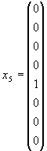
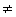
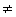

Познакомимся теперь с более сложной
группой Ли - с группой 3-мерных унитарных
унимодулярных матриц SU(3), сыгравшей и
играющей в современной физике элементарных
частиц совершенно замечательную роль. Эта группа
уже 8-параметрическая. (Действительно,
произвольная комплексная матрица 3
× 3 зависит
от 18 вещественных параметров, условие
унитарности уменьшает их число вдвое, а условие
унимодулярности убирает еще один параметр.)
Переход к 8-параметрической группе SU(3)
можно сделать непосредственно от
3-параметрической группы SU(2), заменив 2-мерные
унитарные унимодулярные матрицы U на 3-мерные, а к
соответствующей алгебре - заменив матрицы
Паули σk, k = 1, 2, 3 на
матрицы Гелл-Манна
λα,
α = 1,..., 8:
|
(1.52) |
которые удовлетворяют коммутационным соотношениям
,
где f123 = 1, f147 =1/2, f156 = -1/2, f246 =1/2, f257 =1/2, f346 =1/2, f367=-1/2, f458=, f678 =
(Подобным образом, набравшись терпения, можно построить представление алгебры размерности n для любой унитарной группы SU(n) при конечном n. ) Эти матрицы реализуют 3-мерное представление алгебры группы SU(3) с базисными спинорами
q1 = |
(1.53) |
Представление размерности 8 задается матрицами 8×8 в линейном пространстве, натянутом на базисные спиноры
 |
(1.54) |
Но подобно тому, как в SU(2) любой 3-вектор можно записать в виде бесшпуровой матрицы 2×2, любой 8-вектор в SU(3) X = (x1,..., x8) можно задать в виде матрицы 3x3 :
. |
(1.55) |
В левом верхнем углу мы сразу видим предыдущее
выражение (1.32) из SU(2).
Прямое произведение двух
спиноров qα и qβ можно разложить в точности
также, как и в случае SU(2) (но теперь
|
(1.56) |
Симметричный тензор 2-го ранга имеет
размерность  и для
n = 3, что видно из
матричного представления:
и для
n = 3, что видно из
матричного представления:
(1.57) |
и здесь учтено, что T{ik} =T{ki} Tik (ik, i, k = 1, 2, 3). Антисимметричный тензор 2-го
ранга имеет размерность
Tik (ik, i, k = 1, 2, 3). Антисимметричный тензор 2-го
ранга имеет размерность  и для n = 3 , что также видно из
матричного представления:
и для n = 3 , что также видно из
матричного представления:
(1.58) |
и мы учли, что T[ik] = -T[ki] tik (ik, i, k = 1, 2, 3) и T[11] = T[22] =T[33] =
0.
tik (ik, i, k = 1, 2, 3) и T[11] = T[22] =T[33] =
0.
Через размерности разложение можно
записать как
n × n = n(n+1)/2|SS + n(n-1)/2|AA,
или для n = 3 . Рассмотрим в качестве примера произведение спинора qα и ему сопряженного спинора qβ, чьи базисные вектора представимы как три строки (1 0 0), (0 1 0) и (0 0 1). И здесь разложение на сумму НП достигается вычитанием шпура (напомним, что матрицы Гелл-Манна бесшпуровые)
|
(1.59) |
где - бесшпуровый
тензор размерности dV =(n2 - 1),
соответствующий присоединенному (иногда говорят
"векторному") представлению группы SU(3),
имеющий при n = 3 размерность 8; I - единичная
матрица, соответствующая единичному (или
скалярному) НП. Через размерности это запишется
как или для n = 3 .
- бесшпуровый
тензор размерности dV =(n2 - 1),
соответствующий присоединенному (иногда говорят
"векторному") представлению группы SU(3),
имеющий при n = 3 размерность 8; I - единичная
матрица, соответствующая единичному (или
скалярному) НП. Через размерности это запишется
как или для n = 3 .
Приведем еще один пример довольно
сложного разложения, используемого, в частности,
в вычислениях глюонных поправок к электрослабым
взаимодействиям. Это разложение
симметризованного произведения токов , в
сумму НП:
(1.60) |
где  NSS - бесшпуровый тензор
4-го ранга, симметричный по двум верхним и двум
нижним индексам, размерности
NSS - бесшпуровый тензор
4-го ранга, симметричный по двум верхним и двум
нижним индексам, размерности
(1.61) |

 NAA
- бесшпуровый тензор 4-го ранга, антисимметричный
по двум верхним и двум нижним индексам,
размерности
NAA
- бесшпуровый тензор 4-го ранга, антисимметричный
по двум верхним и двум нижним индексам,
размерности
(1.62) |
два тензора 2-го ранга присоединенного представления размерности NSA = (n2 - 1), симметричный:
(1.63) |
и антисимметричный
(1.64) |
и скалярное представление
(1.65) |
НП смешанной симметрии, описываемые тензорами
4-го ранга и размерности
(1.66) |
(1.67) |
| [SU(3)] | При n = 3 | |
| [SU(4)] | при n = 4 | |
| [SU(5)] | при n = 5 | |
| [SU(6)] | при n = 6 |
На этом мы пока закончим изложение формализма и перейдем к проблеме классификации частиц по представлениям группы SU(3) и некоторым их следствиям.